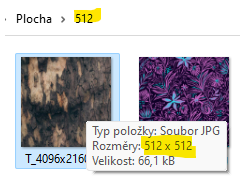
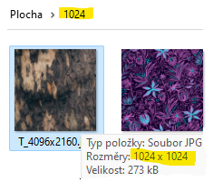
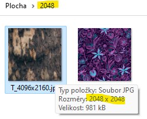

Texture Resizer je nástroj, který mi šetří spoustu času při práci s texturami.
Trávil jsem zbytečně mnoho času ve Photoshopu. Například jsem vytvořil základní texturu 4096x4096, a z ní potom dělal kopie s menším rozlišením (2048,1024,512).
Kdybych měl 20 textur, tak musím 20x načíst Photoshop a celkem 60x kliknout na uložit. Ale tomu je konec
Vytvořil jsem v C# jednoduchý program, který mi umožňuje zpracovat všechny soubory současně. Exportuje rovněž z 1 inputu všechny potřebné outputy najednou.
Výsledky jsou navíc velmi kvalitní a identické s provedením tohoto úkonu ve Photoshopu.




Texture Resizer si můžete zdarma stáhnout zde (Google Drive) a sami vyzkoušet.